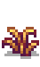
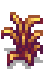
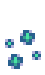
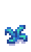
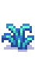

Fasersaatgut
Zur Navigation springen
Zur Suche springen
| Fasersaatgut | |
| Pflanze diese zu jeder Jahreszeit. Erfordert keine Bewässerung. Mit der Sense ernten. | |
| Information | |
| Nutzpflanze: | Fasern |
| Wachstumsdauer: | 7 Tage |
| Jahreszeit: | |
| Verkaufspreis: | |
| Kaufpreise | |
| Nicht verkauft | |
| Joja-Markt: | Nicht verkauft |
| Nicht verkauft | |
| Herstellung | |
| Name des Rezepts: | Fasersaatgut |
| Rezeptquelle: | |
| Zutaten: | |
| Produziert: | 4 Fasersaatgut pro Herstellung |
Das Fasersaatgut ist eine hergestellte Saat. Es benötigt keine Bewässerung und kann auch im Winter wachsen, muss aber auch auf bestellten Boden gepflanzt werden. Es kann auch von Krähen gefressen werden, wenn nicht von einer Vogelscheuche beschützt.
Das Rezept erhält man in einem Brief von Linus nachdem der Spezialauftrag "Community Cleanup" komplettiert wurde.
Jede ausgewachsene Pflanze enthält 4-7  Fasern, wenn mit einer Sense geerntet. Es besteht auch eine 10% Wahrscheinlichkeit
Fasern, wenn mit einer Sense geerntet. Es besteht auch eine 10% Wahrscheinlichkeit  Gemischte Saat zu erhalten.[1]
Gemischte Saat zu erhalten.[1]
Wachstum
| Jahreszeit | Stufe 1 | Stufe 2 | Stufe 3 | Stufe 4 | Ernte |
|---|---|---|---|---|---|
| Frühling Sommer |
|||||
| Herbst |  |
 |
|||
| Winter |  |  |
 |
||
| Tage: | 1 Tag | 2 Tage | 2 Tage | 2 Tage | Gesamt: 7 Tage |
Referenzen
- ↑ Siehe Crop::harvest im Spielcode.
Geschichte
- 1.5: Eingeführt.